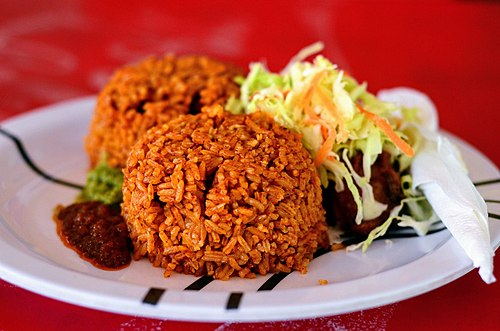
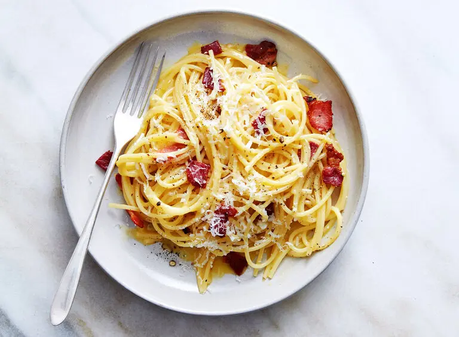

My Recipes
Jollof Rice (Nigeria)
A classic West African dish made with rice, tomatoes, peppers, and spices. It’s smoky, spicy, and full of flavor!
Spaghetti Carbonara (Italy)
An Italian pasta dish made with eggs, cheese, pancetta, and pepper. Simple but very rich in taste.
Fluffy Pancakes (USA)
Soft and fluffy American-style pancakes, perfect for breakfast with syrup and fruits.